| 日付 | キーワード | カテゴリ | 内容 | |
|---|---|---|---|---|
| 15/10/17 | 鯖合併 | FAQ | Q | 鯖合併に関して、覚えておいた方がよい事はありますか？ |
| A | ２０１５／１０／１７に、赤鯖と青鯖の鯖合併がありました。 私が所属していた青鯖は吸収される側でしたが、 この経験を踏まえ、気がついた事をメモしておきます。 ※今回あった内容であり、次回以降の合併でも全く同じシステムになるとは限りません。あくまで参考として見てください。 ◆合併前にＳＳ、または動画を撮っておいた方がよいもの （１） 銀行の中身（吸収される側のみ） 吸収される側の銀行の中身は、ノーマル、ＶＩＰ１、ＶＩＰ２全てまとめて「臨時」タブに放り込まれます。 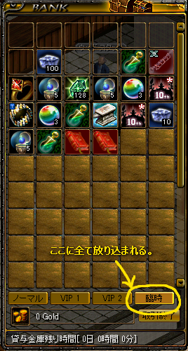 問題は、アイテムの順番が完全にバラバラになるということ。 しかも臨時タブは買い物かごと同じ方式で、 一定以上（数は忘れました）アイテムがあると表示しきれずに残りが隠れてしまいます。 取り出していくとその分隠れていた部分が出てきますが、 ノーマル、ＶＩＰ全部まとめてごっちゃになっているので、やりにくい事この上ない。 適当に入れなおすからいいよ、という人は問題ないかもしれませんが、 整頓してたくさんのものを入れている人はＳＳまたは動画必須です。 なお、ＶＩＰは合併により残り時間が強制的に０になりますが、 その補填としてＶＩＰを過去使った事のある人に対し、ＶＩＰの３０日版の鍵がＷＥＢ倉庫に配られます。 ＶＩＰに物を入れていた人は、 まずＷＥＢ倉庫から鍵を取り出し、ＶＩＰを使えるようにしましょう。 しかし、 せめてアイテムが並んでいた順番にソートして臨時タブに配置する事は出来ないんだろうか？ そんなに難しい処理ではないと思うのですが・・・ 臨時タブについて２つほど補足を。 １つめ、臨時タブに期限はあるのか？という問題ですが、 運営に問い合わせた所、「期限は設定していない」そうです。 たとえば休止している人がいつ戻ってくるか分からない事を考えると妥当な措置だと思います。 ２つめ、臨時タブから全てのアイテムを取り出すと、臨時タブは自動的に消えます。 １０周年カーペットなど、不要でかつ処理できないアイテムを臨時におきっぱにしておく事も可能ですが、 臨時タブを残しておくと銀行を閉じる時にえらく重いので、私は速攻で臨時タブをなくしてしまいました。 （臨時タブをなくすと閉じる時の異常な重さはなくなり、通常に戻ります） 不要でかつ処理できないアイテムについては、アイテム側の仕様変更で解決すべき問題だと思います。 花火とかもそうですが、なんで捨てられない設定にしてるんですかね( ﾟｪﾟ) （２） キャラ選択画面（吸収される側のみ） キャラ名が両方の鯖でかぶっている場合、 吸収される側の鯖のキャラ名が、全て「臨時名」という名に変わります。 これだけならまだ対処出来ますが、合併の際にキャラの並び順まで変わってしまいます。 どうやら記号→ひらがな→カタカナ→漢字の昇順に並びなおすようです。 極端な話、８キャラ全部同じ職で全部臨時名になった場合、どれがどれだか分からなくなります。 名前を全部隠されても、職とＬｖだけでどのキャラか把握できる人はＳＳを撮らなくて問題ないですが、 そうでない人はＳＳを撮っておく事をおすすめします。 そうすれば、職とＬｖでどのキャラか判断できます。 職・Ｌｖともに全く同じだとちょっと厳しいですが・・・ その場合は鎧を変えて見た目を違うようにしておけばよいかもしれません。 臨時名の変更は、キャラを選択してゲームスタートを押します。 すると、 「臨時名のままではダメだから名前を変えて」と言われて名前を入力する欄が出てくるので、 そこで新しい名前を入力します。 名前がかぶっていなければ無事変更→ゲームスタートとなります。 なお、キャラ選択画面では、PrintScreenやＦ１２を押しても クリップボードにコピーされるだけで、スクリーンショットは生成されません。 この場合、自分で画像を作成する必要があります。 やり方がよく分からない場合は下参照。 １．PrintScreen、またはＦ１２を押す ２．スタートボタン→アクセサリ→ペイント でペイントを起動する ３．「貼り付け」を行う → 撮った画像が現れる ４．保存する （３） スキルセット（吸収される側のみ？） 合併に伴い、すべてのキャラのスキルセットが飛びます（そんなアホな）。 配置を覚えている人は問題ないですが、 どこに何をセットしてたか忘れてそうな人はＳＳを撮っておくことをおすすめします。 さらに、合併するとパッシブと左下のオートがOFFになる（オートの状態が初期化される？）ようです。 注意しましょう。 （４） ギルドメンバーの一覧（吸収される側のみ？） 臨時名になったギルドメンバーが多くいる場合、誰が誰だか分からなくなります。 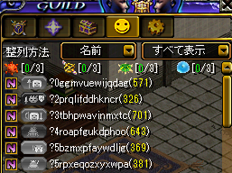 特にギルドを管理している人はＳＳを撮っておき、 どれが誰だか分かるようにしておいた方がよいかもしれません。 なお、アイコンに関しては自動的に裏職または表職に変わったりする事があるので その事については留意しておく必要があります。 （５） 友録（吸収される側のみ） 吸収される側の友録は全て消えます。 過去と決別だ(ﾟДﾟ)ｸﾜｯという人はむしろよいかもしれませんが、 思い出的なものを残しておきたい人は、ＳＳを撮っておくとよいでしょう。 ＜読みにくい友達の名前を保存しておく方法＞ 合併後に友達に耳をしたいが、名前がちょっと特殊なので文字列を保存しておきたい場合は 下の手順で名前の文字列を保存しておくとよいかもしれません。 １．友録画面を出し、友達を選んで「耳打ち」ボタンを押す ２．チャットウィンドウに友達の名前が表示されるので、友達の名前の部分を選択状態にする ３．Cｔｒｌを押しながらInsertを押す → クリップボードに友達の名前がコピーされる ４．メモ帳などに貼り付けする ＜ゲーム内で、切り取り・コピー・貼りつけを使う方法＞ ＲＳの画面では通常使える切り取り（Ctrl＋ｘ）、コピー（Ctrl＋C）、貼り付け（Ctrl＋V）などのショートカットが使えません。 代わりに次の方法で出来ます。 切り取り（Shift＋Delete）、コピー（Ctrl＋Insert）、貼り付け（Shift＋Insert） またはShift＋Ｆ１０を押し、出てくるサブメニューから選んでもよいです。 ◆全てのギルドがホールランク１になる 吸収する側、される側ともに全てのギルドがホール１になります。 これで攻めになった場合、攻城戦自体がなく、自動的にホール２に上がりました。 すなわち、対象のギルドが存在しない場合、無人の城を攻めるというような作業はなく、 自動的に勝敗が決定します。 ホール３以降も同様のようです。 |
|||
| 15/10/17 | ギルドダンジョン | FAQ | Q | ギルドダンジョンに入る際、転送できないキャラがいる（飲まれる）事がよくあります。 回避する方法はありませんか？ |
| A | ＧＤで飲まれる現象については、数年前からずっと不具合として存在する。 不具合の現象としては少しずつ変わってきているような気がするが、 現在は以下のように把握している。 ◆飲まれ方は２パターン 飲まれ方には２パターンあり、転送した瞬間、次のいずれかの状態になる。 １．背景はＧＤマップ、または真っ黒。ＮＰＣはギルドホールのまま。 ２．クライアントごと強制終了させられる。 １はリログが可能だが、そのままにしておくと再び１や２が起こる事があるため、再起おすすめ。 ２は要再起動。非力なＰＣだと再起に非常に時間がかかる事が多い。 １、２ともに再起またはリログ後はギルホにいる事になっている。 ◆４人以上のＰＴでよく起こる 私の経験上、ＰＴメンバーの人数で起こる確率が変わる。 ２または３人ＰＴ → 飲まれはほとんど起こらない。（私は遭遇した事がないが、飲まれ１が起こる事がある模様。） ４人ＰＴ → ＰＴ欄の４番目が時々飲まれる。１～３番目は飲まれにくい。 ５人以上のＰＴ → ＰＴ欄の５番目以降が、しょっちゅう飲まれる。１～４番目は飲まれにくい。 ５人以上のＰＴでは特にＰＴ欄の５番目が飲まれる事が多いように感じる。 ◆飲まれにくくするために行っている事 現状、飲まれを完全に防ぐ事は不可能と思われるが、 こうすれば飲まれにくくなるかも？という事柄が経験的にいくつかあるので紹介する。 （１） ＧＤに行く前にＲＳを再起動する。 リログではなく、再起動。 特に長時間ＲＳを起動させっぱなしの状態だと、クライアントごと落とされる確率が上がっているように感じる。 （２） カーペットで移動してきた場合は、カーペットから降りて少し動く。 カーペットに乗っている状態や、降りた瞬間というのは 自分の画面で見える自キャラの位置と、他の人から見た自キャラの位置が違う事が多い。 この状態はキャラの位置情報がバグっていると推測され、 このまま飛ぶと飲まれる事が多いように感じられる。 カーペットから降りて少し動き、キャラの位置情報を正しい値に更新するとよいかもしれない。 移動スキルや高速ヘイで移動してきた場合も同様と考えられる。 また、左クリック押しっぱでずーっと移動してきた場合も怪しい。 （３） パッシブやスキルが画面に発動している状態で転送しない。 探知やアーチ、バトマなどの パッシブの発動が画面に見えている瞬間に転送すると飲まれやすいように感じる。 スキルの発動も避けた方がよい。 さらに、例えばエビをかけた時に５、６秒ごとに光の輪がクルンと表示されるが、 こういったものも転送の瞬間と重ならないように避けた方がよいかもしれない。 やりにくい時は転送時にパッシブを切ってもらうとよい。 転送する瞬間の白チャットも推奨できない。 要するに、 転送時に画面表示に関するデータをあまり割り込ませない方がよいという事かもしれない。 非力なＰＣでは特に飲まれ２（強制）を食らうケースが多いように感じられる。 非力なＰＣのキャラを他キャラから少し離れた所に置き、他キャラのパッシブや補助グラが見えないように しておくとよいかもしれない。 （４） 一周終わってギルホに戻ってきた際、戻った所から少しでも動く。 特に放置させてるキャラがＰＴ欄の５番目以降にいる場合などは 戻った所から少しでも動くようにしている。 効果があるかはやや疑問だが、やらないよりはよい成績が出ている気がする。 （５） 「はい」を押す前に一定時間待つ 転送する際に「このメンバーで出発しますか？」というダイアログを出した状態で １５～２５秒程度待つ。 今まではこれをよくやっていたが、最近はあまり効果が感じられないかも。 飲まれがひどい日に行っている。 ◆原因の推測 飲まれ方が２種類ある事から、原因は１つではないように思われるが、 飲まれ１に関しては多人数の同時移動による座標認識の不具合に起因しているのではないかと私は推測している。 このゲームは移動の座標認識に関する不具合が多い。 思いつく所で以下のようなものがある。 ① 一定以上長い距離を、移動スキルを使って移動するとゴムる事が多い。 ② 自分の画面で見える自キャラの位置と、他の人から見た自キャラの位置が違う事がよくある。 ③ Ｇｖでコルした直後にすぐ近くにいる人にアスヒをしようとしても、 「途中に邪魔なものがあります」と表示されアスヒできない事がよくある。 （ＷＩＺ自身、またはアスヒ対象のどちらかの座標データがコル前の座標から更新されていないと推定される。ＷＩＺまたは対象がそれぞれ動いた後にアスヒが入るようになる） ④ 特にＧＤＢ６で、ムシルが見えなかったり、中ボスが明らかに少ない事がある。 ムシルが見えなくなる現象は、ガディアやパンプキングなど、数が多い中ボスが沸いた時に起こる。 サキュだけだったり、何も沸かない時はほぼ起こらない。 特にコルの場合は多人数が同時に座標を一気に変更するので、不具合が起こりやすいのかもしれない。 ④の現象と合わせて考えると、 多くのキャラを同時に座標変更する際に、不具合が起こりやすいと予想される。 ＧＤの転送時もこれと同じ理屈で不具合が起こっている可能性がある。 この件に関する情報を現在募集しています。 何か気がついた事があったらBBSかメールまでお願いします。 |
|||
| 14/11/14 | ゲーム動作 | FAQ | Q | ログイン後に少し操作をしているとやたら重くなり、チャットもラグってまともに打てなくなります。 【14/11/15追記】 ゲームガードに修正が入り、現在はこの不具合は解消されているようです。 |
| A | 11/13（木）からこの不具合が起きるようになりました。 ログインは出来るけど、少しするとウィンドウを開いたりチャットを打ったりがものすごく重くなってまともにゲームが出来なくなります。 ロジクールゲーミングソフトウェアを起動しているとこの現象が起こるようで、これを終了させると回復します。 以下Windows７においての操作法です。８は持ってないのですみませんが分からないです。 ◆終了のさせ方 Windows画面の右下にある通知アイコンの中から黒いGマークのアイコン（下参照）を右クリして「終了」を選択します。 設定によってはアイコンが隠れている場合もあるので、 その時はすぐ左にある白い小さな△ボタンを押し、「隠れているインジケータを表示」でアイコンを出してください。 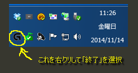 なお、右クリしても「終了」を含むメニューが出ない場合があるので、その際は次の手順で。 ①CTRL+ALT+DEL でタスクマネージャーを起動する。 ②「プロセス」タブを選択（下参照） 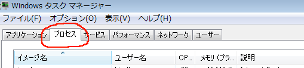 ③一覧の中からLCore.exe（右の説明欄に「Logitech Gaming Framework」と書いてあるやつ）を選択し「プロセスの終了」を押す。 ④「LCore.exeを終了しますか？」という確認ダイアログが出るので、「プロセスの終了」を選択。 ⑤黒いGマークのアイコンが消えた事を確認する。（消えるまで少し時間がかかる場合あり） このソフトはWindows起動時に自動的に起動する設定になっている事が多いです。 毎回この作業をやるのがめんどくさい人はスタートアップからロジクールソフトウェアをはずしておくとよいでしょう。 ◆スタートアップからの外し方 ①Windowsのスタートボタンを押す ②すぐ上に出てくる「プログラムとファイルの検索」欄に「ｍｓｃｏｎｆｉｇ（半角で）」と入力してenter。「システム構成」ウィンドウが出てくる。 ③「スタートアップ」タブを選択。 ④スタートアップ項目の中から「Logitech Gaming Framework」のチェックをはずし、「適用」ボタンを押す。 ◆備考 この現象によりRSの動作が重くなっている時は、ブラウザやスカイプなど他ソフトでのキー入力も重くなります。 RSを落とすとそれらの他ソフトでは普通に入力できるようになります。 この事から考えると、ゲームガードとロジクールゲーミングソフトウェアがなんかケンカしているのかもしれません。 |
|||
| 14/11/14 | ログイン | FAQ | Q | ログイン時に４桁の数字を打とうとしてもパスワード欄に入って打てない事があります。回避出来ないでしょうか？ |
| A | ログインする時、一般的には ①ID入力 → ②パスワード入力 → ③enter（または「確認」をクリック） の手順で行っている人が多いと思われますが、 次のようにすると高確率で4桁の数字を打てないバグが回避出来ます。 ◆回避するためのログイン方法 ①ID入力 ②パス入力 ③TABキーを押す。するとIDがハイライトされ選択状態になる（下参照） 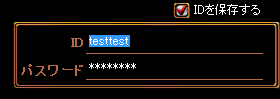 ④enter（または「確認」をクリック） １００％回避出来るかはわかりませんが、 毎回これでやるようになったら４桁の数字が打てない事がほぼなくなり快適になった！という声を多く聞いています。 困っている人は参考にしてください。 |
|||
| 14/9/27 | イベント | FAQ | Q | クイズ！メインクエストについて教えてください。 |
| A | 古都銀の少し下、広場の左側にいる「小説家アーティー」に話しかけると受諾可。 １章から５章まで５種類あり、終了させている章までクイズをする事が出来る。 全問正解するとアイテムがもらえる。間違っても何度でも受けなおす事ができる。 １章から５章までアイテムをもらうと結構な数のインベが埋まるので留意されたし。 なお、一度全問正解した章は、再度受けることは出来ない。 １１月1８日までやっている模様。 詳細は公式のこちらのページを参照。 各章ごとにそれぞれ２パターンの問題があるようだ。 ◆メインクエ１ 報酬： わくわくＢＯＸ（１）、古代竜の心臓（５）、風の羽（１０） Ａ問題 問題文： RED STONE メインクエストChapter 1と関係のない称号は何でしょう？ 正答： ３１４１１ Ｂ問題 問題文： 「Chapter1 RED STONEのうわさの真実」クエストでRED STONEに関するうわさを・・・ 正答： ２２１４２ ◆メインクエ２ 報酬： わくわくＢＯＸ（１）、古代竜の心臓（５）、風の羽（１０）、ゴールド袋100万（１） Ａ問題 問題文： 「メインクエストChapter 2」の正確なタイトルは何でしょう？ 正答： ２１４１２ Ｂ問題 問題文： 「メインクエストChapter 2」進行中、アイノ・ガスピルが個人的に頼んだ内容は何でしょう？ 正答： ３２４３４ ◆メインクエ３ 報酬： わくわくＢＯＸ（１）、古代竜の心臓（５）、風の羽（１０）、ゴールド袋100万（１）、レインボーコア（１） Ａ問題 問題文： 「メインクエストChapter 3」の一番最後のボスモンスターの名前は？ 正答： ２３２２４ Ｂ問題 問題文： 「メインクエストChapter 3」内で魔法バリアを設置するために必要なアイテムは何でしょう？ 正答： ４３３４２ ◆メインクエ４ 報酬： わくわくＢＯＸ（１）、古代竜の心臓（５）、風の羽（１０）、ランダムゴールド袋100～1000万（１）、デスペナガード（１） Ａ問題 問題文： 「メインクエストChapter 4」進行中、バヘル大河の水を手に入れるためにはNPCに一定のゴールドを払います。誰に、いくら払いますか？ 正答： １２２３３ Ｂ問題 問題文： 「メインクエストChapter 3」を完了したキャラクターがRED STONEハンターを取得したまま・・・ 正答： ４３２１２ ◆メインクエ５ 報酬： わくわくＢＯＸ（１）、古代竜の心臓（５）、ランダムゴールド袋100～1000万（１）、レインボーコア（１）、デスペナガード（１）、天上（取引不可・１） Ａ問題 問題文： 完成されたRES STONEを天上界に渡すためには、まずアイノ・ガスピル会長と話す事が必要です。それでは・・・ 正答： １４３４３ Ｂ問題 問題文： 港町ブリッジヘッドから港町ボルティッシュまで船で行く時、船員にいくら支払いますか？ 正答： ２２１３４ 以下、各設問と解答を掲載する。 ◆メインクエ１（Ａ問題：称号） ３１４１１ Q1）RED STONE メインクエストChapter 1と関係のない称号は何でしょう？ １）ゴドム共和国名誉議員（Lv 1） ２）特A洞窟シーフ（Lv 1） ３）宝石鑑定士（Lv 1） → メインクエ2－2－1でティレンのクエをこなして獲得する。 ４）クロマディガード名誉隊員（Lv 1） Q2）「Part3-3 路上強盗団アジトの探索」クエストと関連のあるブリッジヘッドにいるNPCの名前は何でしょう？ １）ケブティス ２）ゴティス ３）ガンディス ４）クンティス Q3）「Part7-1 証明」クエストでソゴム山脈 赤山登山路でイフリィトのリーダーに会いますが、このリーダーの名前は何でしょう？ １）未知の赤い悪魔 → 火酒倉庫の最深部にいる。正体はロシペル。 ２）火酒 ３）ポテムスン → 酒代のツケを代わりに我々に払わせる、ビッグアイにいるおっちゃん。 ４）スルタン Q4）「Part7-2 天使の涙」クエストに関わる天上界の入口にいるNPCの名前は何でしょう？ １）ハルダエル ２）ゲディウィン ３）ゼイン → ポイズンテールの毒を取ってこさせる人。 ４）ガイル → 正体はゲール。真の正体はロシペル。 Q5）「Part8-8 愛の芽生え」クエストにて、ジュディアと関係のあるアイテムは何でしょう？ １）ジュディアのネックレス ２）ジュディアのリング ３）ジュディアの本 ４）ジュディアのスティック ◆メインクエ１（Ｂ問題：うわさ） ２２１４２ Q１）「Chapter1 RED STONEのうわさの真実」クエストでRED STONEに関するうわさを収集する途中に出会えるＮＰＣではないのは、次の誰でしょう？ １）おじいさん ２）おばあさん ３）貴族 ４）貴族婦人 Q２）「Part 4-1 グレイツのうわさ集め」クエストの依頼人であるこのＮＰＣの名前は何でしょう？ １）グリーツ ２）グレイツ ３）ドォンガ ４）ケブティス Q３）「Part 7-1 証明」クエストの依頼人であるロマ村 ビスルにいるNPCの名前は何でしょう？ １）クーン ２）カーン ３）トーン ４）チャン Q４）「Part 8 記憶の破片たち」クエストで、バリピースエヴァース（古代魔法書）アイテムを手に入れるためには魔法の塔モリネルタワーに行かなければなりません。このモリネルタワーの入り口で会えるNPCの名前は何でしょう？ １）プロンド ２）プログ ３）ルブロン ４）プロド Q５）「Part 10-1 RED STONEハンター」クエストのボスモンスターの名前は何でしょう？ １）バリピース ２）ロシペル ３）ゲール ４）エヴァース ◆メインクエ２（Ａ問題：タイトル） ２１４１２ Q1）「メインクエストChapter 2」の正確なタイトルは何でしょう？ １）手がかりの欠片たちを探して ２）手がかりの破片たちを探して ３）手がかりの記憶たちを探して ４）手がかりの宝石たちを探して Q2）「メインクエストChapter 2」進行時’ウンゲホ’というモンスターの足の爪を手に入れる場面があります。’ウンゲホ’とはどんなモンスターでしょう？ １）ワタリガニ ２）ワシ ３）クマ ４）老人魔法師 Q3）メインクエストChapter 2「クレテウス頭領」に関連するレンズ製作材料にない物はどれでしょう？ １）ビホルダーの目 ２）リザードトルーパの皮 ３）サイドウォーカーの角質 ４）クレテウスのレンズ Q4）「メインクエストChapter 2」に関わる最後の材料で、タトバ山にあるダイアーウルフの犬歯を手に入れようとする理由として、正しいのは次のどれでしょう？ １）特別な文書が開かないように固定させるため ２）勇猛の象徴であるダイアーウルフの犬歯で勇者であることを証明するため ３）アモレア頭領に要求されたから仕方なく ４）タトバ山に行ってきたことを証明するため Q5）メインクエストChapter 2「個人的な頼み」クエストの関連アイテムであるティベルとは何でしょう？ １）催眠をかけるための玉 ２）夢読みに使う玉 ３）呪いを解くための薬と推測される玉 ４）胸がドキドキする時に飲む薬と推測される玉 ◆メインクエ２（B問題：個人的に頼んだ内容） ３２４３４ Q１）「メインクエストChapter 2」進行中、アイノ・ガスピルが個人的に頼んだ内容は何でしょう？ １）失くした義足を探してほしい ２）弱い脚のために義足を作る材料 30個 ３）失くしたメガネを探してほしい ４）新しいメガネを作るための材料 30個 Q２）「メインクエストChapter 2」進行中、ナルテミル頭領のために作る補聴器の材料でないものは何でしょう？ １）ヴァンパイアの耳 ２）オーガの歯 → オーガの皮 が正解。 ３）ラットマンの足指の爪 ４）マミーの包帯 Q３）次の中で「メインクエストChapter 2」に登場していないNPCは誰でしょう？ １）バトン ２）ジュリアース ３）エバン ４）トムクルス Q４）「メインクエストChapter 2」最後の材料であるダイアーウルフの犬歯はいくつ必要ですか？ １）30 個 ２）20 個 ３）10 個 ４）40 個 Q５）メインクエストChapter 2「個人的な頼み」に関係するアイテムの火種を手に入れる方法は？ １）マッチ売りの少女の個人的な頼みごとを叶えるともらえる。 ２）通りがかりの旅行者にもらう。 ３）消えかけのたいまつから低い確率で抽出する。 ４）炎鬼というモンスターを倒して手に入れる。 ◆メインクエ３（Ａ問題：ボスモンスター） ２３２２４ Q１）「メインクエストChapter 3」の一番最後のボスモンスターの名前は？ １）赤い悪魔 ２）アークデビル ３）オークデビル ４）アークデーモン Q２）合成に関する書を隠す場所はどこでしょう？ １）地下水路Ｂ２ ２）地下水路Ｂ３ ３）地下水路Ｂ４ ４）スウェブタワー２０Ｆ Q３）メインクエスト進行中に出会って友達となる仲間のうち、ウィザードの名前は？ １）カルス ２）ヴォルフラム ３）ファーブ ４）ラビア Q４）タトバ山にある木の名前は何でしょう？ １）百年樹 ２）千年樹 ３）キリ ４）シラカバ Q５）次のうち、レッドアイの頭領でない人は誰でしょう？ １）ジュリアース ２）メデス ３）クレテウス ４）ヘレナ → ブレンティル旅館で働く女性で、クレテウス頭領のかつての婚約者。結婚式の前日、聡明なクレテウスに正体がばれるのを恐れた父親の追放天使（ロシペルと推定される）に拉致、監禁されて以来30年が過ぎる。そばにいる仔犬は監視役のモンスターが変身しているもの。 ◆メインクエ３（Ｂ問題：魔法バリア） ４３３４２ Q１）「メインクエストChapter 3」内で魔法バリアを設置するために必要なアイテムは何でしょう？ １）コボルトの毛 ２）魔法師の本 ３）魔力解除キット ４）食人スコーピオンのしっぽ → 「3-1-3 魔法バリアの材料探し」 にて。 Q２）レッドアイ会長の名前は何でしょう？ １）アイノ・ジャックピル ２）アイオン・ガスピル ３）アイノ・ガスピル ４）アイノ・ジャピル Q３）地下界の補給倉庫で倒さなければいけないボス級モンスター以外のモンスターは何体でしょう？ １）50 体 ２）70 体 ３）100 体 ４）150 体 Q４）地下界の戦略家セイジのいる秘密ダンジョンで、二股に分かれる道にいるモンスターでないのはどれでしょう？ １）セパース ２）ケロマン ３）セルケロン ４）クルマン Q５）ミルトリムの道／シュトラセラト入口付近ダンジョンにいるボス級モンスターは誰でしょう？ １）ブラルンカ ２）ブルランカ ３）カドーカ ４）ハノブ ◆メインクエ４（Ａ問題：バヘル大河の水） １２２３３ Q１）「メインクエストChapter 4」進行中、バヘル大河の水を手に入れるためにはNPCに一定のゴールドを払います。誰に、いくら払いますか？ １）スーアン／200 Gold ２）アモレア／300 Gold ３）カルス／400 Gold ４）アイノ・ガスピル／500 Gold Q２）「地下界の動きを封じよう」クエスト進行中、秘密ダンジョンに入るクリスタルをもらって進行します。この時、クエストを進行中ではない人も一緒に、秘密ダンジョンに入れるようにするアイテムは何でしょう？ １）迷彩機 ２）迷彩服 ３）ドラコリッチの鍵 ４）ティアメスの鍵 Q３）「地下界の動きを封じよう」クエスト進行中、秘密ダンジョン「凍りついた城」のボス、アクアドラゴンを倒してからやるべき行動とは何でしょう？ １）秘密ダンジョンの制限時間が終わるまで待つ。 ２）関連クエストを持っているキャラクターが造形物を押す。 ３）リーダーのみ造形物を押す。 ４）接続を終了する。 Q４）「メインクエストChapter 4」進行中に出会える新しい仲間の名前は何でしょう？ １）カルス ２）ゲール ３）アンジー ４）ファーブ Q５）「メインクエストChapter 4」クエスト完了時にもらえる報酬のアイテムは何でしょう？ １）RED STONEハンター称号 ２）宝石鑑定士格証（マスター？） ３）RED STONE ４）ジュディアのネックレス ◆メインクエ４（Ｂ問題：キャラクターレベル） ４３２１２ Q１）「メインクエストChapter 3」を完了したキャラクターがRED STONEハンターを取得したまま古都ブルンネンシュティグに入った時、メインクエスト４を受けられるキャラクターレベルは何レベル以上でしょう？ １）200 レベル ２）210 レベル ３）220 レベル ４）230 レベル Q２）「メインクエストChapter 4 ゲールが知っていること」クエスト進行中、キメラの角アイテムを手に入れるため、廃坑Eのフィールドでモンスターのボーンキメラを狩ります。その際、ボーンキメラの角はいくつ必要ですか？ １）5 個 ２）8 個 ３）10 個 ４）20 個 Q３）メインクエストChapter 4「Part 2 変色した魔法の液体」クエスト進行中、モンスターのマーブルガゴイルからマーブルガゴイルの羽束を手に入れます。マーブルガゴイルはどこにいるモンスターでしょう？ １）廃坑 Ｂ９ ２）廃坑 Ｂ４ ３）廃坑 Ｂ７ ４）廃坑 Ｂ１ Q４）火の鳥の爪を手に入れるためにドラコリッチを倒します。ドラコリッチを倒しに行く、彼の遺跡地はどこにあるでしょう？ １）西プラトン街道／アリアン東部地域 ２）呪いを受けたミズナの洞窟Ｂ１ ３）ビガプール教会 ４）鉄の道／アウグスタ入り口付近 Q５）RED STONEのかけらを一つの石にする際、必ず必要な魔法の液体は何でしょう？ １）金色の蜘蛛の糸 ２）RED STONE製作用魔法液 ３）RED STONE企画用魔法液 ４）RED STONEの絵の欠片液 ◆メインクエ５（Ａ問題：アイノ・ガスピル） １４３４３ Q１）完成されたRES STONEを天上界に渡すためには、まずアイノ・ガスピル会長と話す事が必要です。それではRED STONEを地下界や赤い悪魔に渡すためには、どの町の誰と話すのでしょうか？ １）港町ボルティッシュ・アンジー ２）港町ブリッジヘッド・アンジー ３）ログハウス・カルス ４）古都ブルンネンシュティグ・ブローム Q２）次のうち、天上界にRED STONEを持っていく時にもらえる褒美ではない物とは何でしょう？ １）体力 ボーナス ２）ギルドレベル ボーナス ３）スキルポイント ボーナス ４）フルチャージポーション Q３）RED STONEを地下界や赤い悪魔のもとに持っていくためにはケルベロスを追い出します。ケルベロスがいる場所はどこでしょう？ １）ロシペルの城 ２）地下界の町 ３）異空間 ４）ブラックファイヤーダンジョン Q４）天上界の褒美のうち、スキルポイントボーナスは最大何回までもらえますか？ １）3 回 ２）5 回 ３）7 回 ４）10 回 Q５）赤い悪魔でもらえる褒美のうち、アイテム複製を得るためには、悪性向とゴールドが必要です。アイテム複製の褒美をもらう際に必要な性向とゴールドはいくらでしょう？ １）悪性向 50、３億 Gold ２）悪性向 75、10億 Gold ３）悪性向 100、5億 Gold ４）悪性向 100、1億 Gold ◆メインクエ５（Ｂ問題：ボルティッシュまでの船賃） ２２１３４ Q１）港町ブリッジヘッドから港町ボルティッシュまで船で行く時、船員にいくら支払いますか？ １）1,000 Gold ２）10,000 Gold ３）2,000 Gold ４）5,000 Gold Q２）より高い品質のRED STONEを手に入れるために上げなければならない称号は何でしょう？ １）宝石鑑定士 ２）RED STONEハンター ３）RED STONE探偵 ４）錬金術 Q３）「メインクエストChapter 4」の最後にアイノ・ガスピル会長の天使時代の正体が明らかになります。アイノ・ガスピル会長の正体は何でしょう？ １）ゲール → そして、メインクエ中ずっとダメルでゲールとして活動している者の正体はロシペルである。 ２）ロシペル ３）ダマテル ４）アズラエル Q４）次のうち、地下界にRED STONEを渡したらもらえる褒美は何でしょう？ １）ユニークアイテム → 天上界 ２）ギルドスキルボーナス → 天上界 ３）ギルドスキルリセット ４）アイテム複製 → 赤い悪魔 Q５）RED STONEのかけらで完成品を作る際、材料の一つであるクローラーの抜け殻の汁はどのくらい必要ですか？ １）5 滴 ２）10 滴 ３）12 滴 ４）15 滴 |
|||
| 13/11/9 | キャラ動作 | FAQ | Q | 右クリおしっぱの攻撃がやたら遅いです。もっと速く攻撃できるはずなのに・・・ |
| A | 左上のオートをOFFにしているとこの現象が起こるようです。 プログラムの不具合と予想されます。 |
|||
| 13/11/9 | Windows８ | FAQ | Q | Windows８を使っていますが、インストールが出来ません。 |
| A | MSアカウントの名前に全角文字を使用していると、この現象が起こるようです。 ◆15/2/11追記 現在は全角文字を使用してもインストールできるようになっている、という情報あり。 以下は出来なかった場合の参考情報として。 解決方法としては、２種類考えられます。 ◆半角英数字のアカウントに変更する ①ローカルアカウントに戻す。 ②別アカウントを英数字で作成する（Administrator権限で作成） ③サインアウトする ④別アカウントでサインインする。 ⑤MSアカウントへ変更する。 ◆インストールプログラムを全角文字が入らないパスに移して実行する 【注：未確認です】 おそらくパスに全角文字が入っているとダメっぽいので、 インストールプログラムをパスに全角が入っていない場所に移動し、 インストールフォルダも全角文字が入らない場所に設定すれば アカウントが全角のままでもうまくいくかもしれません。 私自身はWindows８を持っていないので確認できませんが、 もしこれでうまくいった、うまくいかなかった、などの確認ができたら教えていただけるとうれしいです。 本来はアカウント名が全角でも問題なく動作すべきですが、 現状このゲーム以外でもこのような不具合を起こすソフトがあるようなので、 これからWindow８のセットアップを行う方はアカウント名を半角英数字で設定するのが無難です。 なお、IE１１では公式サイトを信頼済みサイトに登録する必要があるようです。 |
|||
| 13/3/17 | ギルドダンジョン | FAQ | Q | GDB6にて、ロザミアをいくら探しても見つからない時があります。 |
| A | 結論から言うと、 探せる場所に沸いて来ない事があり、その場合は決して見つける事は出来ません。 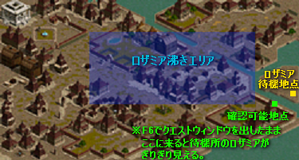 ロザミアは上図の通り、普段は右端島のロザミア待機地点にいます。 この島には他に、出現しない中ボスや３人以下の時のムシルなどがいます。 左上に「ロザミアを探してください！」の青メッセが出ると、 通常はロザミア沸きエリアのどこかにロザミアが待機地点から転送され、 それを探すという手順になるのですが、 たまに待機地点にとどまったまま転送されない事があります。 この場合、ロザミアに話しかける事は不可能で、 そのままMOBを倒し続けてもう１回青メッセを出すという解決方法になります。 スムーズなロザミア攻略方法としては、 「ロザミアを探してください！」の青メッセが出たら、 まず右端の島にロザミアがいるかどうか確認しに行きましょう。 待機地点のロザミアは、普通のやり方では見えないのですが F6でクエストウィンドウを出したまま確認可能地点まで来ると見えるようになり、 ロザミアがいるかどうかを確認する事が出来ます。 待機地点にロザミアがいれば、ロザミア探しをやめ、次の青メッセを出すためにMOBを倒す。 待機地点にロザミアがいなければ、そのままロザミア探しを続ける。 という手順です。 転送されない原因は不明ですが、 サーバーとのデータ通信がたまたまうまくいかなかったか、プログラムの不具合が予想されます。 余談ですが、ロザミアの沸き範囲は上図の青いエリア内のみで、 それ以外の場所には沸きません。 探す際の参考にしてください。 |
|||
| 13/3/17 | 秘密ダンジョン | FAQ | Q | ポタ出しの時、10分放置し、泡出しも行い、他に誰もポタを出していないのに、 いくら狩ってもポタが出ません。 |
| A | もう一度泡出しをすると、すぐに出る場合が多いです。 泡出しを行ったのに「泡出しを行った」というフラグが立っていないと考えられます。 原因は不明ですが、 サーバーとのデータ通信がたまたまうまくいかなかったか、プログラムの不具合が予想されます。 |
|||
| 12/8/31 | 起動 | FAQ | Q | Loading画面からログイン画面に移る際に固まってしまいます。 |
| A | 不具合と思われる動作です。 CTRL＋Alｔ＋Del でタスクマネージャーを起動、 RedStone.exeのタスクを終了させてから、もう一度RSを起動しましょう。 |
|||
| 12/8/11 | 画面・操作 | FAQ | Q | 取引を申し込んでもすぐにキャンセルされてしまい、取引画面が開きません。 |
| A | これは、取引する２人の、マップに移動してきた順番に関係しているようで 先に移動してきた方が、後に移動してきた方に取引を申し込むと、この不具合が起こることがあるようです。 後に移動してきた方から取引を申し込むと回避できます。 |
|||
| 12/8/11 | 画面・操作 | FAQ | Q | ◆チャットを打つ時のフォントがすごく大きくなってしまいました。 ◆NPCや移動ポータルがクリックできなくなりました。 |
| A | どちらも不具合と思われる動作です。 根本的にはRSクライアントを再起動することで解決しますが、 再起動せずに一時的に回避する手段として、 Mキーを２回押してワールドマップを出す→閉じるするという方法があります。 ※Mキーの代わりにF3でインベを出してもOKという情報あり。他にも方法があるかもしれない。 ※F3ではフォントの大きさは直らない模様。 |
|||
| 12/8/11 | メインクエ | 小技 | Q | メインクエの各章一番最初の説明が長いのでスキップしたいです。 |
| A | 最初のハトが飛んでるうちに、 F1を押してヘルプ画面を出す→Escキーで閉じるするとスキップできます。 便利(ﾟДﾟ)ｸﾜｯ ただし、これを行うと、そのマップにいる間そのキャラはコルを受け付けなくなる模様です。 マップ移動すれば正常に戻ります。 |
|||
| 12/4/23 | マップ | FAQ | Q | 古都のマップがリニューアルしたけど、NPCの位置とかどうなってるの？ |
| A | 12/03/13の大型UPで、古都マップがリニューアルされて大変便利になりました。 以下簡単に説明します。 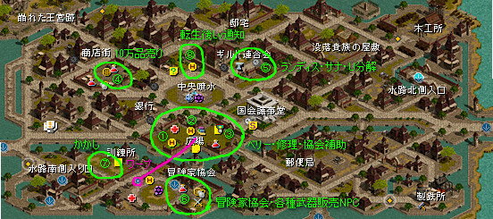 まず噴水↓の広場のNPC（①～③）から。 ①リラ 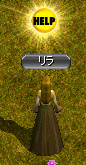 ベリーがもらえるNPC。 以前は冒険家協会の中にいましたが、大胆にも青空進出しました。 ②協会派遣魔法師 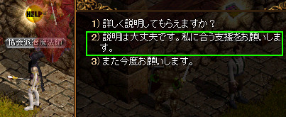 エンヘイブレエビの各補助魔法をくれるNPC。 効果は弱いですが、なんと１時間持続するため、長い時間ソロする時にはとても便利です。 しかもスフィアを持っていれば高レベキャラでももらえるようになりました。 ただし、これを一度もらうと他の補助魔法をかけても途中で上書きできなくなります。注意。 ③ティレン 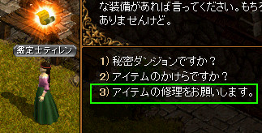 メインクエのNPCとしてお世話になったティレンですが、 こっそりアイテム修理の仕事を始めたようです。 ④ペイトン 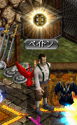 アリアンの鍛冶屋同様、10万品を買い取ってくれる貴重なNPCが登場です。 ⑤ランディス、サナ、タポ 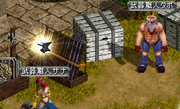 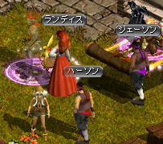 ブルンギルド連合会の中にいたランディス、サナ、タポも一気に青空進出して 便利になりました。 リラに対抗意識を燃やしたかどうかは不明です。 ⑥各種武器・防具NPC  武器・防具を売っていたNPCが一同に会しました。 トルスは単品5000G以下の品を高値で買い取ってくれます。 シフの有限武器やボトル系などの売りはこちらを使うといいでしょう。 すぐそばには冒険家協会があります。 新しいベリーをもらう時はそちらまで。 ⑦かかし 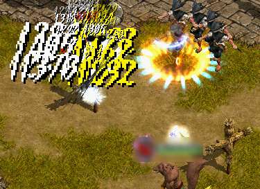 ダメがどれくらい出るか試したい人で日々にぎわっています。 ⑧占星術師ムーン 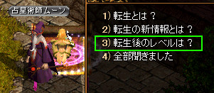 転生後のLvを教えてくれます。 |
|||
| 11/10/4 | 起動 | FAQ | Q | RedStoneの起動ランチャーから「開始」ボタンを押しても、起動しなくなってしまいました。 |
| A | ウィルス対策ソフト（AVG、avastなど）がRedStoneの実行ファイル（Redstone.exe）を ウィルスと判断して隔離している＝RSのフォルダからRedstone.exeを削除している 事が原因のようです。 ウィルス対策ソフトの設定で Redstoneのフォルダごと、もしくはRedstone.exeを例外に設定した後、 RSを再インストールすれば解決するようです。 |
|||
| 11/9/24 | 検索 | FAQ | Q | 自分のLvの適正狩場を知りたいです。 |
| A | 110721の大型UPで、狩場の検索機能が追加されています。 Mボタンを押してワールドマップを表示し、 右のメニューから検索を選ぶと使用できます。 便利なので、ぜひ利用してみましょう。  |
|||
| 11/9/24 | ギルドダンジョン | FAQ | Q | GDに転送する際、PTリストの5番目の人がうまく転送されない事が多いです。 |
| A | 【！注意！】 原因ははっきりとは分かりませんが、 PTリストの5番目付近の人がうまく転送されずに落ちてしまい、 最悪GHに戻されてしまうケースがあります。 飲まれやすい時間帯に特によく起こります。 転送落ちを防ぐ方法は今の所飲まれ対策と同様の事をするぐらいしか分かっていませんが、 GH戻りを回避する方法については、 5番目が落ちた際に、 先にNPCに話しかけてMOBを沸かせてから再INさせるとマップに復帰しやすい という情報を得ました。 これについての確認情報を募集中です。 |
|||
| 11/8/2 | ギルドダンジョン | FAQ | Q | ギルドダンジョンで飲まれた後、戻ったら装備が消えてしまいました。 |
| A | 【！注意！】 現在、GDに飲まれた後に装備が消えるという現象が報告されています。 起こる条件として、 ギルドホールで装備を受け取り、そのままGDに入って飲まれると起こる事がある ようです。 これが起こってしまうと自力での復旧は不可能で、 運営に連絡して装備を復旧してもらう必要があります。 回避策としては、 ギルホで装備を受け取った後に1回マップ移動をし、戻ってからGDに行くと この現象を回避できるのではないかと思われます。 ＜追記＞ こういった現象が起こる原因として考えられるのは、 おそらく装備取引したにも関わらず なんらかの理由で鯖側のキャラクターの装備認識が更新されない事があり、 そのまま飲まれてしまうと飲まれたキャラのみ取引前の状態に戻って 結果アイテムが消えてしまう、という事ではないかと予想されます。 |
|||
| 11/7/23 | アップデート | FAQ | Q | 11/07/21の大型UPって何が変わったの？ |
| A | ・「4次転生実装」 ・新規マップ追加 「エルン山 迂回路（適正Lv 750～775）」 「乾いたオアシス（適正Lv 775～800）」 → デフヒの一番左上より ・「霊術師」「闘士」インフィニティシリーズの追加 ・「GVGアリーナ」 リニューアル ・「ファストポータル」 リニューアル ・「ワールドマップ」 新機能追加 ・「一部スキルバランス調整・仕様変更」 ・「画像解像度1024×768の追加」 ・「買い物カゴ拡張」 詳細は下記URLよりどうぞ（公式） http://members.redsonline.jp/news/notice_body.asp?ntc_num=3671 【！注意！】 現状いくつか不具合があり、修正予定らしいです。 ＜主な不具合＞ ・1024x768モードで、攻城戦の相手が表示されない。 →ギルド資金の項にカーソルを合わせると表示されるようです。 ・ファストポータルでモリネルタワー付近を選ぶと、変な場所に飛ぶ。 ・ファストポータルでドレム川付近を選ぶと、変な場所に飛ぶ。 ・ホール4以上なのにGDB7の入場券が発行されない。 ・ログハウスを出ると変な場所に飛ぶ。 ・ティアメスの道でMOBを倒して外に出ると変な場所に飛ぶ。 詳細は下記URLより http://members.redsonline.jp/news/news_body.asp?ntc_num=3670 |
|||
| 11/7/23 | アップデート | FAQ | Q | 11/07/21の大型UPの公式説明で分からない内容の変更はあるの？ |
| A | 発見・報告のあった限りで書いていきます（随時追加） ・町のテレポーターが１人から２人になった。 → 町戻りやホールテレポーターから近い位置に配置されて便利になっています。 ・ファストポータルで行ける場所が増えた。 ①グレートフォレスト／プラトン街道 （古都←←←、ワープのたくさんあるマップ） → マップ一番左上、ティアメスのマップにすぐ行ける ②ナラダ平原／ノーススワンプ （ラカリフサ←←） → マップ一番左下に飛ぶ ③ソゴム赤山 → ロマ村のすぐ近くに飛ぶ |
|||
| 11/4/19 | 画面・操作 | FAQ | Q | ミニマップにホワンホワン色々なものが表示されてうるさいんだけど、消せないの？ |
| A | 今受けているクエのNPC・モンスター・該当マップの位置が ミニマップに表示される機能がつきました。 クエをやる時はとても便利ですが、普段は切っておきたいと思うかもしれません。 右上の歯車アイコンを押せばON/OFFの操作パネルが出てきます。 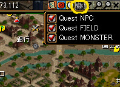 |
|||
| 11/3/23 | ギルドダンジョン | FAQ | Q | ギルドダンジョンに入ろうとしたら転送画面で固まってしまいました。 |
| A | いわゆる「飲まれる」という現象です。 原因ははっきり分かっていませんが、 人が多い時間帯＋人気のあるGD の条件でよく起こる事から、 GDマップへの接続PT数が一定以上になると起こる不具合であると予想されます。 |
|||
| 11/3/23 | ギルドダンジョン 【！重要！】 |
FAQ | Q | ギルドダンジョンに飲まれ、ログインし直しているのですが 何度やっても転送画面で固まってしまい、ギルホに戻れません。 |
| A | 以下はいずれも不確定な情報だが、 試していることや気がついた事を書き記しておく。 【１．飲まれにくくするために試しているあれこれ】 ① GDに行く前に全員でPC再起動（またはRS再起動）する。 ② 転送する際に「このメンバーで出発しますか？」というダイアログを出した状態で 15秒程度待つ。 ③ 転送する瞬間に動かない。 スキル発動、しゃべるなどもダメ。 パッシブも切っておく。 ※ 鯖に負荷がかかっている状態で、転送時に余計なデータをわりこませると GDマップへの転送に失敗しやすくなるのかもしれない。 ④ GDに入る前に１度ギルホから出て入りなおす。 【２．飲まれた場合の対処法】 単に全員放置（5分程度）で戻れるようだ。 なお、放置時間の5分は目安。 昔の同じような仕組みの時は3分程度で戻れたので、 ひょっとしたら3分程度の放置でも戻れるかもしれない。 戻った後、PTを組みなおすと次に飲まれにくくなるようだ。 【３．飲まれる危険信号？】 入口以外は4人以上で行った時にネクロ（ムシル）からお楽しみ部屋に飛べるが、 たまに4人以上で行ってもネクロが見えない事がある。 この場合、リログすればネクロが見えるようになるのだが、 この現象が起こるとその次の回に飲まれる可能性が高くなっているかもしれない。 この場合、次の回の前に全員PCを再起動すればよいかもしれない。 この件に関する情報を現在募集しています。 何か気がついた事があったらBBSかメールまでお願いします。 |